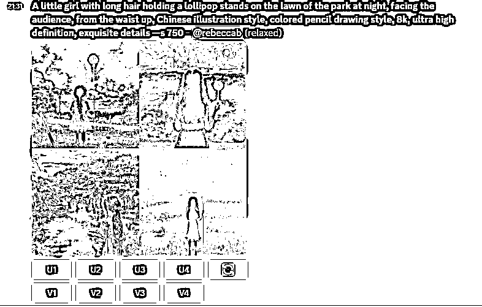
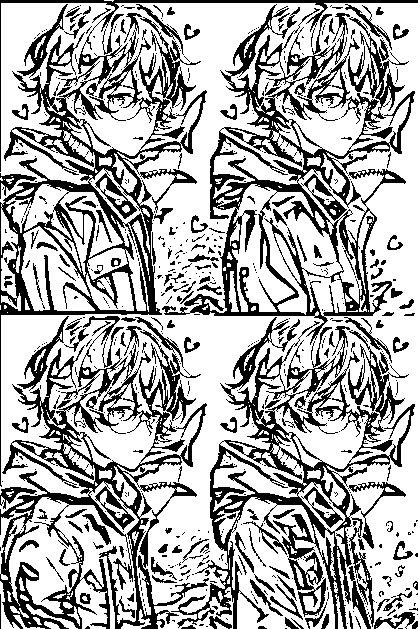
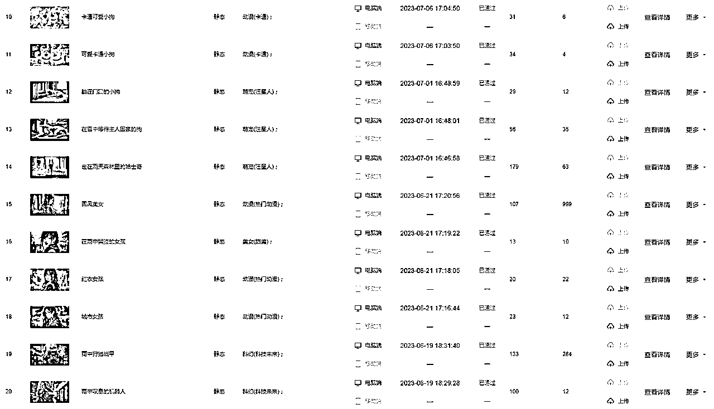
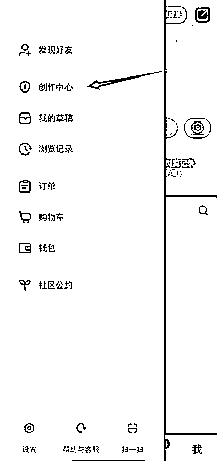
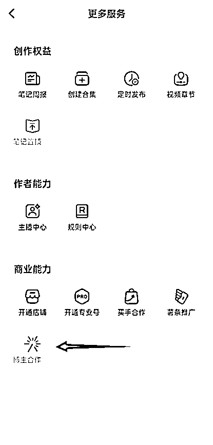

来源：https://gql7hsphkme.feishu.cn/docx/Xmzud7nJvotKPExI6VwcDEp2nmh
欢迎大家观看专属钵仔的【Midjourney知识宝典】本宝典教你Midjoureny从入门到精通到变现的全流程！认真看完实操下去的话你会收获颇丰！
创作不易！如果分享，转载商业或者其他，请告知并标注来源！！
Midjourney一个由同名研究实验室开发的AI绘画程序，可根据文本生成图像
Mj目前架设在 Discord 频道上。于 2022 年7月 12 日进入公开测试阶段,使用者可通过 Discord 的机器人指令进行操作，可以创作出很多的图像作品。
Midiourney目前已经关闭了免费频道，所以目前使用是需要付费的
Midjourney及Discord使用需要科学工具，需要自备网络环境，搞不定的话可以使用国内平替软件。
Discord 是前几年诞生的非常火的一种新型聊天工具，类似 QQ频道、微信群、kook
Midiourey的使用方式是：通过给 Discord 频道内的聊天机器人发送对应文本，聊天机器人返回对应的图片。
所以想用 Midjourey，需要先注册一个 discord 账号，然后进入Midjourney的Discord 频道。我们注册了账号之后，可以用浏览器使用discord，也可以下载他们的客户端。
如果你还没有账号，请看【 】
如果你有账号需要充值，请看【 】
如果实在搞不定网络问题可以使用国内的平替软件，请看【 】
1.通俗一点，使用midjourney就是你提要求，Midjourney根据你的要求生成图片
2.图片的满意度取决于你的提示词的精准度，以及你设置的一些参数，所以掌握基本的指令操作以后，想做的更好看是需要不断丰富你的关键词库。
根据midjourney的逻辑，你给的指令和提示词很重要，所以使用教程也主要围绕这两块展开
常用指令为"/imagine"，在对话框中输入此指令加空格，在 prompt 后输入关键词(如:a cat)点击回车，系统就会生成对应的插画
首次使用会出现此消息，点击"Accept ToS"按钮即可
Midjourney机器人会根据我们输入的关键词生成的图片，所以提示词的撰写内容很重要，会直接影响我们的出图效果
【主题内容+环境描写】
主题内容可以是一个人或者一个物品，也可以是一个建筑。
环境描写可以是室内，城市，咖啡厅，夜间公园之类的
例如：
一个小女孩站在夜晚公园的草坪上
A little girl was standing on the lawn of a park at night
只要你把主题内容写清楚，再加上一点环境描写基本能达到出图效果！
【主题内容+环境描写+风格描写】
例如：一个小女孩站在夜晚的公园草坪上，中国插画风格，彩色铅笔画风
A little girl stands on the lawn of a park at night, in the style of Chinese illustration and colored pencil drawing
加了画风的提示词，可以让你画出来的图片风格是什么样的！刚开始新手可能不知道那么多画风风格，不过多看一下别人画的图片就知道是什么风格了。
【主题动作内容+环境描写+风格描写+质量描写+镜头描写】
一个长发的小女孩手拿棒棒糖站在夜晚的公园草坪上，腰部以上，背影，中国插画风格，彩色铅笔画风，8k，超高清，精美的细节
A little girl with long hair holding a lollipop stands on the lawn of the park at night, above the waist, back, Chinese illustration style, colored pencil painting style, 8k, ultra high definition, exquisite details

如果你能掌握这个提示词基本一些很好看的图基本是没有问题了。不过有些比较难的需要适当的垫图后才能完成！
系统会生成四张图片，下面的 U1、U2、U3、U4 代表了显示的四张图(分别代表左上，右上，左下，右下);点击其中一个按钮，系统就会发给用户对应的图片
选择U1按钮系统就会发给用户对应的图片
V1、V2、V3、V4 同样对应了四张图片(分别代表左上，右上，左下，右下)，点击其中一个按钮系统会推给我们四张对应图片的细节调整版
如果对生成的图片不满意，可以点击刷新按钮，重新生成
对话框中不仅可以输入关键词，还可以输入后缀来调整图片质量;比如--ar 16:9，代表生成 16:9 尺寸的图片:--q 5 代表输出高质量的图片(图片质量从 q1到 q5)
微信头像:1:1，小红书图文封面:3:4，更多尺寸可以参考下面的图片
通过更多的描述语句来优化图片:可以按照主题内容、环境背景、构图镜头、参考方向、图像设定的顺序方式输入关键词来进行优化
例如: A cat is lying on the table,Black fur,Blue eyes,White background --ar 4:3 --q 5
(一只趴在桌子上的猫，黑色的毛发，蓝色的眼睛，白色背景，4:3 比例图片，图片质量 5)
在对话框输入/Settings 指令，确定后会收到以下消息界面。上面是选择整体的模型，下面的设置这个图片的画风强度
一般来说我们创作一般主题的画作选择Version 6或者Version 5.1，创作动漫主题画作选择Niji Version5模型，完成选择后，在没有添加模型参数的指令中都是默认使用settings选中的模型
在对话框中输入/blend 指令，就可以同时上传两张图，并将两张图融合成一张，以下图片是用机器人和橘猫融合后的图片
通过垫图加关键词的方式绘制新图片，
① 点击对话框左边+号上传一张参考图，点击回车发送
② 右键图片选择复制链接
③ 输入/imagine指令，粘贴刚才的图片链接，后面加上描述语句关键词，发送即可
例:A background image with glass texture elements, translucent, light blue background, Centerthe composition, Ultrawide shot, 3d rendering, very clean --ar 16:9 --q 5
（一张带有玻璃质感元素的背景图，浅蓝色背景，居中构图，超广角镜头，3D 渲染，干净，16:9 尺寸，画质为 5)
④ 选出一张图片，通过"样式变更"得到这张图的更多变体，这里选择了V4
⑤ 选择了U4，并选择输出高质量;点击图片选择"在浏览器中打开"，另存为即可
点击 Midjourney 服务器，可以在房间里找到其他人的作品;自己创作的作品可以进入 Midjourney 官网，点击"Sign in"进入查看
如果你在网上看到喜欢的图片，却不知道它的关键词是什么，可以使用这个指令，他会告诉你这个图片的关键词。
输入/Describe(根据图片生成提示词)
输入后会显示2个选项，第一个是根据你上传的图片来进行反推关键词，第二是根据你给的图片的链接来反推关键词！一般都是选择第一个上传图片来推关键词，准确率比较高！
这个图片链接必须要先把图上传到频道里后，直接拖动这个图片会自动生成链接。把这个链接拉到下面的输入框里才可以反推关键词。直接复制图片网址是推不出来的

它会给你①②③④个不同的描述词供你使用，你可以直接复制关键词，重新生成你的图片，效果很赞
如果当你把关键词写的很好，但还是生成不出好效果的图片可以用这个方法。先上传一张图片。上传图片方法直接把图片托到里面。也可以点击左下角的加号，点击上传文件。
上传后回车发送出去即可
在对话框里输入/imagine 指令，粘贴图片链接（不知道怎么图片链接在哪里的）看上面的注意部分
注意粘贴完链接地址以后，必须输入一个空格，才能继续添加其他描述词，否则指令无效。最终效果如下
如果你垫图后的还原度跟原来的图片还是有差距，可以试一下这个指令：--iw
默认值在1，0.5-2之间，数值越大，和你提供的图片提示相关度越高同样的一张原图，权重参数不一样，生成的图差别非常大
一般情况下，即使输入相同的关键词给midjourney，每次生成的4张图都和上次不一样，这个时候就可以使用seed值来保持一致。
格式：--seed
默认值:系统随机分配一个seed数值
含义:相同的seed值和完全一样的描述词(包括空格等标点符号)会产生完全一样的【四宫格初始图
片】
先和往常一样，给一段关键词，生成4张图片
鼠标放在消息的右上角，点击【添加反应】的图标
在对话框里输入“env”，点击第一个信封的图标
私信里就会收到发来的seed值
重新输入相同的关键词，并且添加seed后缀即可生成一模一样的图片
格式例如：空格 --seed 空格数值
--seed 123456
如果你画出来的图片里面，有你某个不想要的元素你可以使用这个指令--no，例如我不想要这组图片里我不想要眼镜。
直接按刷新图片的按钮，在后面添加，--no Glasses（眼镜的提示词）然后提交。生成出来的图片就没有眼镜了
图片演示
注意：删除元素需要开启混合模式后才能使用。
有时候mj画出来的图片是有瑕疵的，但你有特别想要这个图片，可以使用局部重绘的按钮。例如：这个图的爱心画的不是很好，你可以按Vary（region）这个按钮
把这想重画的区域框起来，然后按发送即可
重画后的效果
MJ画出来的图片是比较模糊的，特别是你没有给他关于画面画质的关键词来要求他时。生成出来的图片都是比较模糊的。解决办法有两种，一个是用软件来高清优化。一个是用他MJ里自带的提升画质按钮来进行高清优化
分别有2个画质提升的选择，一个是画质提升2倍，一个是四倍。当然提升画质是需要消耗你的快速时间的，你也可以画完图后，关闭使用快速时间来帮图片进行高清优化
注意：MJ和niji的优化图标是不一样的，可以看下图。mj是这2个按钮进行高清优化
输入指令/settings。点击乌龟图标的按钮，即可不使用快速时间来进行高清优化了。当你想画图的时候再点兔子图标的按钮开起来就可以了！
画质对比
如果画出来的图片太小，人物占比太大，但你又不想重画可以使用图片缩小功能，【Zoom Out 2x，Zoom Out 1.5x，Custom Zoom】分别是缩小2倍，5倍和自定义放大倍数
如果你要画的图片只有脖子以上的内容，但你又想让mj画脖子以下的内容的，可以用这个几个按钮。↑↓←→来实现这个操作。
效果演示图


注意拓展的部分都是MJ根据你给的提示词和图片元素来进行绘画拓展，你也可以自己修改提示词来让mj画拓展部分的画面内容
如果你对画出来的图片想稍微稍微变化一下样子，可以用这个2个【Vary（Subtle）变化微小，Vary（strong）变化很大】
效果演示
Niji是一种二次元模型，生成的图片都是二次元、动漫风格。
该模型对动漫、动漫风格和动漫美学有更多的了解，它在动态和动作镜头以及以角色为中心的构图方面表现出色。一般这个模型用在动画插画上比V系列模型效果更好。
Discord目前已经可以在自己的服务器里添加Niji机器人了。使用方法和MJ机器人是一样的，所以这里只介绍怎么安装和切换。
用刚刚的上面生成的图片演示。看看效果。效果和还原度好多了！
当你用MJ生成的图和本人不是很像时，可以使用InsightFaceSwap换脸，提高相似度，需要在你的Discord服务器里添加机器人
官方邀请链接：https://discord.com/oauth2/authorize?client_id=1090660574196674713&permissions=274877945856&scope=bot
先打开你的discord，方便直接登录跳转
在浏览器输入上面的官方邀请链接，就会出现下面的界面，选择自己的服务器添加即可
回到自己的Discord,可以看到服务器已经成功添加了
含义是记忆保存你给的图片，它会记住面部特征，比如我做一张自己的头像，所以先给他喂我的脸
上传你的照片，然后在idname后面随便输入一个名字即可，后面会用来识别，最后发送即可

点击发送以后，会回复你两句话:
需求已经发送了
你的名称为xx的照片已经创建了
上传的是需要换脸的照片
我这里上传一张群友的图片
注意这里idname要和你上面喂图的idname保持一致
点击发送等一会即可看到最终效果，
我这里做演示所以用的是卡通头像，所以效果不好，甚至有点想笑！
自己做的话最好用真人照片，效果更明显！
真人换脸效果是这样的
如果想要替换的图片不需要上传，是你刚刚用midjourney生成的，可以直接点击消息右上角的三个点，找到APP-INSwapper，就可以直接替换，不需要使用swapid
当然，这里换的脸默认是你最新上传的人脸。
/setid-设置默认照片名称或选项
/listid-列出已注册的照片名称
/delid-删除已注册的照片
/dela11-删除所有已注册的照片
您每天可以进行50次换脸操作。如果一张图片包含2个或更多人脸,它将消耗2个命令。每日使用限制将在0:00 UTC时重置。
经过我多次测试，要换脸了的图片如果不是很好的话，换脸后的图片是有瑕疵的。不过问题也不大。你可以选择保存图片后打开ps 自己p一下。也是可以购买它的计划来重新画没有瑕疵的图片
InsightFaceSwap 支持在一张图像中交换多个面部！要做到这一点：

这可能会生成一个结合了两者特征的面部。顺序会影响结果,这意味着 1+2 的结果与 2+1 的结果不同所以随意尝试不同的组合。你也可以输入相同的名字来强调特性，比如 /setid 1+1+2
这个特性允许你混合多个面部特征来生成面部交换结果。例如，你可以使用 /setid 1+2 来生成一张可能像他们儿子的照片。或者你可以使用 /setid 1+2 来生成一张可能像他们女儿的照片。
Pika是一种视频模型，可以根据你给的图片或者提示词来输出一个3秒的视频。
目前这个模型暂时不能加到自己的频道里面，但可以在它的官方频道里使用。
频道可以在Discord的探索公开服务器里搜索Pika找到
进入频道后往下划，找这几个频道，随便点一个进去即可。这里可以你看到别人生成的视频。别人也可以看到你生成的视频。
输入指令/create。在后面输入你想生成图片的提示词即可输出视频。
也可以通过使用指令/animate 上传一张图片后输入提示词来达到让这张图片变成视频的效果
这是一个图片精修的机器人。可以移除背景，提升画质，网格划分（切片功能）....等等。每天它会给一些积分让你免费给使用，大部分都是可以使用积分免费使用的，可是有些功能是购买订阅后才能使用的。
频道链接：https://discord.gg/gYJJ3ucwBJ
每次你选择好图片后，他都会在下面显示，你可以根据你的要求来选择对应按钮就可以了。
选择这个指令即可保留人物，去背景的效果
选择这个指令即可把图片进行切割，不管图片是多大 ，都是分成4份
选择这个指令可以调整图片的亮度/锐化/反差/显色。
选择你要调整图片的内容
选择调整的强度即可
这算是SD的官方频道了，里面可以生成视频。但跟上面的Pika比的话，就是Pika是给免费使用的，这个不给免费使用。要订阅了计划才能使用。想尝试的可以去看一下。
直接在可发现服务器里搜索：Stable，就能看到了。
直接开通小红书店铺，挂你做出的好看的图片售卖，省心。
把画的图放到取图的小程序里，用户取图需要看广告才能下载。就是赚点广告费！目前收益。
把画的图放到对应的网盘里，然后引导用户去网盘里拿图。赚拉新费用
把画的图片放到对应壁纸网站，别人下载用你的壁纸你赚点钱。但这个要持续堆量，而且审核机制比较严格。特别是图虫，需上传验证。

把宝宝的四维彩超变成一张宝宝的照片，来预测宝宝的长相。准爸爸准妈妈们会去拍摄四维彩超，检查宝宝的健康，四维彩超的价格几百几干的都有，而且只能看到大概的轮廓。抓住了宝妈们迫切想知道孩子模样的心理，有付费意愿和付费能力，我了解到的很多做这个赛道的，吸引的都是精准粉丝，转化率极高。

1.上传用户的四维彩超图片带mj里。使用垫图生图的方式+提示词即可
2.使用/imagine的指令，加上图片链接、关键词、--iw1.3-2之间，生成4张宝宝的图片
提示词模板：
3-month-old Chinese baby wrapped in a towel sleeping on a white bed, head close-up, dynamic body language, immature skin, soft light, realistic details, 8k Ultra HD --ar 125:100 --iw 1.3
翻译：
3个月大的中国宝宝裹着毛巾睡在白色的床上，头部特写，动态的肢体语言，稚嫩的皮肤，柔和的光线，逼真的细节，8k超高清
这个和画图的逻辑是一样的，只是把头像换成表情包而已。推荐使用niji的模型来生成。因为生成的效果会好一点
表情包提示词模版
A cute husky, various expressions, happy, sad, angry, expecting, laughing, disappointed, cute eyes, white background, illustrations, cute, emojis as an illustration set, in rough comic line style, dynamic pose deep white, f/64 group, related characters,
翻译
一只可爱的哈士奇，各种表情，高兴，悲伤，生气，期待，笑，失望，可爱的眼睛，白色背景，插图，可爱，表情符号作为插画集，以粗犷的漫画线条风格，动态姿势深白，f/64组，相关人物，
你也可以截图微信表情包商城里的表情，来复刻翻新使用/describe


教别人怎么使用Midjourney。通过发布关于MJ的提示词笔记。吸引目标用户，引流有需要的客户到微信。
不过我加了几个同行，有些是加了就直接给资料你，然后叫你去上课。有些是说要上课后才能给你资料。

课程内容也都差不多，不过他们不着急转化- -。每天就是叫你去上课- -我也没搞懂他变现点在哪里？
当你账号粉丝数到1千以后就能开启这个商单的功能，开启方法：打开小红书→右上角的三条杠→创作者中心→更多服务→博主合作


报价可以根据系统推荐的报价来设置，注意:一个月尽量就接1~2条，不要接太多。不然会有降低账号权重的风险，导致后面没单接。就像我有一个号，半年没有一单。
需要有一定的写词功底，知道基础的写词逻辑和能熟练运用权重功能的。因为你卖给别人词，别人直接用可能达不到你的效果，你要告诉他怎么调整和要修改哪些地方可以达到更换效果。客单价看你自己定。

链接：https://pan.baidu.com/s/1LYOCs1KRj53qL0FJos6l1A?pwd=1234 提取码：1234
如果你已经学会了上面的基本操作，不妨看一下这个进阶版的教程：
进阶版包含了教你如何更熟练的使用Midjourney的指令来生成图片！还有更多本文档没有提到的指令来给帮用户生成指定图片和定制图片。还有我平常自己用到整理的提示词文档+图片样板！保证你一学就会，一用就废（滑稽表情）哈哈哈哈